Data Communication
-
The process of exchanging data between two devices i.e sender and receiver through transmission medium such as wired or wireless is called data communication.
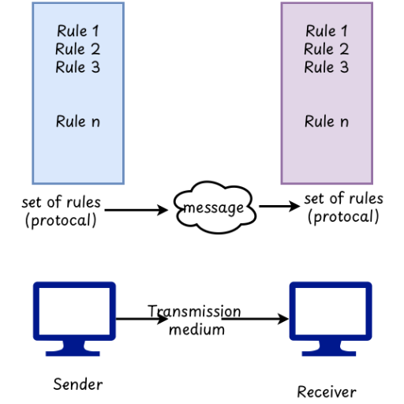
Fig: Data Communication
Elements of communication system
- Information: It is the message which is exchanged between computers during the communication process.
- Channel: It is the path along which data and information passes in the form of electrical signals.
- Encoder: Encoder is the translator that converts the information into electrical form.
- Amplifier: It is the electronic device that amplifies the strength of the transmitted signal.
- Decoder: It is also the translator that converts the electrical signal back to the form that is acceptable to the receiver.
Communication System
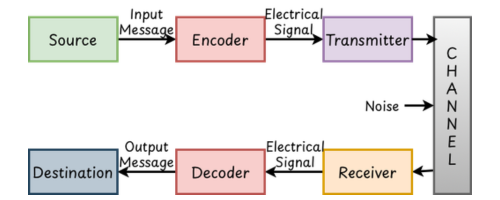
-
As shown in above figure it consist of various components which are as follows:
-
Source: The source is the location from where the sender sends the message or information. It could be voice, image, text, video, etc.
-
EncoderThe message or information selected from the source is in the physical form the source is in the physical form so it needs to be converted into electrical signal first. So the encoder helps to convert the physical message into an electrical signal.
-
Transmitter: The transmitter is the device or circuit that prepares the signal for long distance transmission. It boosts the signal strength to allow for long distance.
-
Channel: The transmission channel is the medium used to send messages or information over long distances while travelling through different unwanted signals mixed with the original signal which degrades the quality. Such signals are called noise.
-
Receiver: It is a device or circuit that receives the signal after it has travelled a certain distance through the channel. The receiver is also responsible for the noise eliminator present in the signal.
-
DecoderThe electronic signal receiver by the receiver is now converted into actual message and this task is done by decoder.
-
Destination: The destination is the point at which the communication system and the receiver side receives the actual message.
Mode of communication
- As we know in data communication there is the exchange of information between two terminals. So, depending upon the direction of flow of signal during communication.
-
It can be categories into three types:-
-
Simple mode
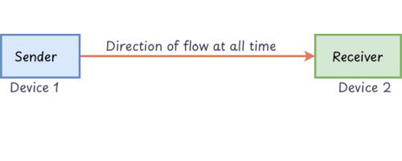
Fig: Simple Mode - In the simple mode, data flows occur unidirectional which means signal flow forwards to the receiver only.
- Example: Radio/Television Broadcasting, etc.
-
Half Duplex Mode
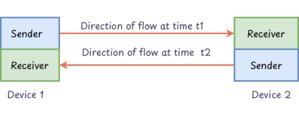
Fig: Half Duplex Mode - In this model, a bi-directional flow of data or information occurs but the transmission is only one way at a time. While one device is sending another it only receives data and vice-versa.
- Example: Walkie-talkie etc.
-
Full Duplex Mode
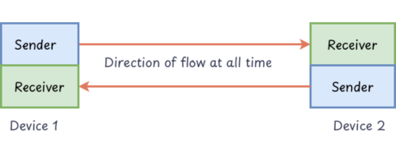
Fig: Full Duplex Mode - In this model, a bi-directional flow of data or information occurs and the transmission can occur in both ways simultaneously.
- Example: Telephone etc.
-
Computer network
- It is a group of computer systems and other computer hardware devices that are linked together through the communication channels to facilitate the communication.
- In it a computer network is a series of points or nodes that are inter connected with others for exchanging data.
-
The network model can be classified on the basis of size, topology and architecture.
-
Classification on the basis of size
-
On the basis of size network mode is divided in following types
-
-
Local Area Network(LAN)
- It is the type of network which is under the same administration control.
-
It is designed to operate within a limited geographical area such as room, building, school, etc. and covers only a few KM(up to 3). Higher speed data transfer rate up to 1 Gbps.
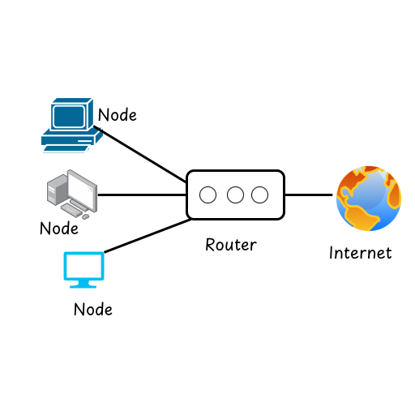
Fig: LAN -
Metropolitan Area Network(MAN)
- These are the network models which are specially designed for town or city. It covers a larger area than LAN and smaller than WAN. It covers a distance of up to 100KM. It has a lower data transfer rate as compared to LAN (i.e 10Mbps).
-
Some examples include cable TVs, ISP (Internet Service Provider), etc.
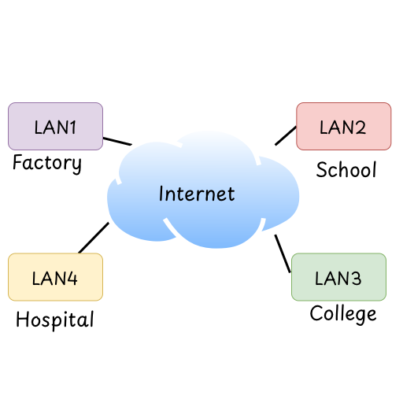
Fig: MAN -
Wide Area Network(WAN)
- It is also known as network of networks. They are used to connect LANs together so that users and computers in one location can communicate with users and computers in another location. It covers a wide range of districts, countries, and the world.
- It has the lowest data transfer rate among all there i.e (64kbps-10mbps).
-
Example GPS, banking network, telecommunication network, etc.
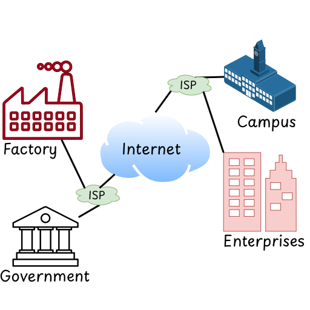
Fig: WAN
-
-
-
Classification on the basis of topology
-
The term topology refers to the way in which a network is laid out physically. Simply it reflects how different computer servers and the physical devices are connected with each other.
-
Bus Topology
-
A network topology which connects networking components along a single continuous cable (bus) is known as Bus topology.
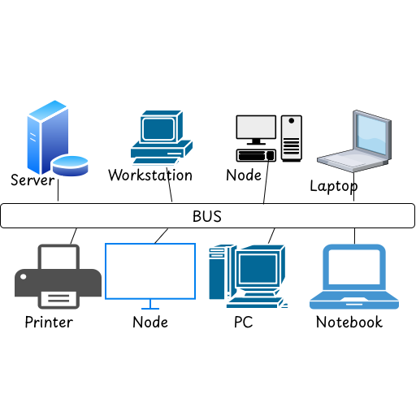
Fig: Bus Topology Advantages
- Easy to install the topology.
- Low cost as compared to others.
- Easy to add new components to the network.
Disadvantages
- Network goes down if there is a problem on the bus.
- High chances of data collision because all devices share the same path.
-
-
Star Topology
-
In this topology, each node in the network is connected to a central hub. The hub acts as a bridge between the nodes, allowing data to be transferred between them.

Fig: Star Topology Advantages
- Simple and easy to set up
- Easy to add and remove nodes.
- Easy to find-out fault because of the use of a hub.
Disadvantages
- Required more cable length.
- High cost as compared to other topologies.
- If the hub goes down, then the whole network goes down.
-
-
Ring Topology
-
In ring topology each device has a dedicated points to point connection with only two devices on either side of it.
-
In such topology a single is passed along the ring in the direction of the destination node.
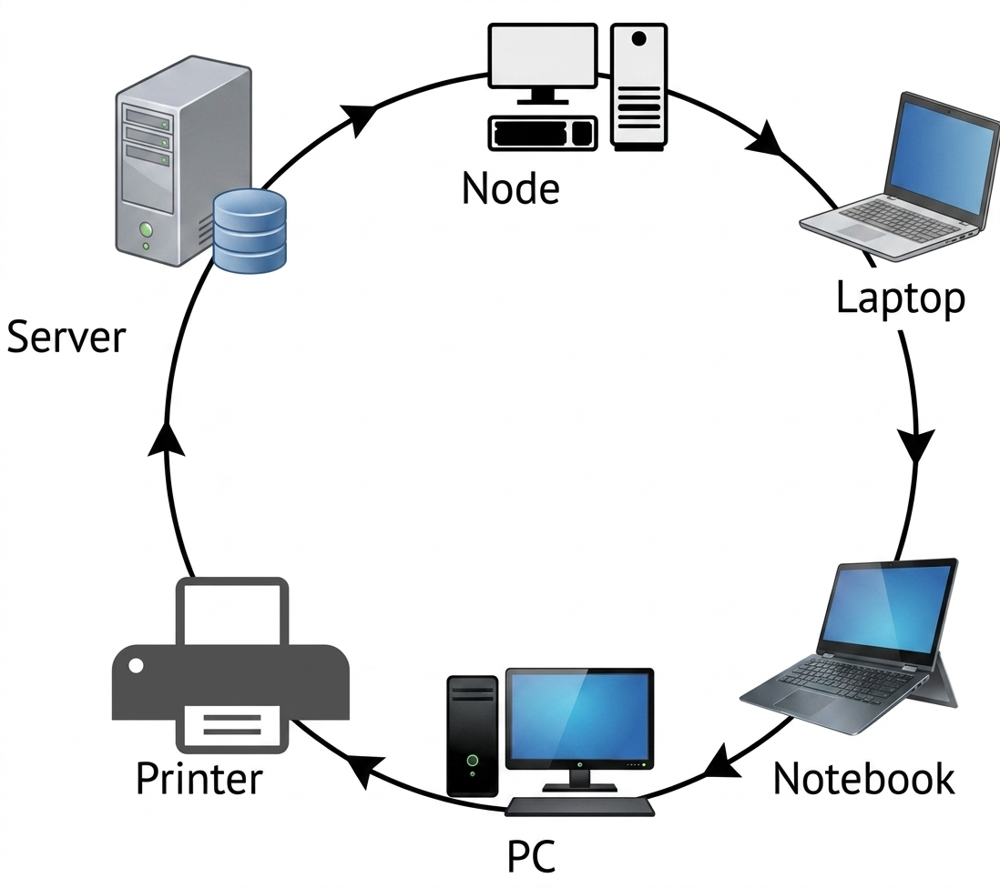
Fig: Ring Topology Advantages
- Simple and cheap technology.
- Less chance of data collision.
- Easy to manage.
Disadvantages
- Data or signal must have to pass through all nodes.
- If any one node goes down the entire network goes down.
- Slower performance.
-
-
Mesh Topology
-
Mesh topology is a network setup where others node to every other node are connected.
-
This creates multiple pathways for data transmission ensuring high reliability and fault tolerance.
-
It’s often used in critical applications like military communications, and advanced networking systems.

Fig: Mesh Topology Advantages
- High reliability and fault tolerance.
- Multiple pathways for data transmission.
- Improve network performance.
Disadvantages
- Extensive cabling and hardware.
- Configuration complexity.
- Troubleshooting issues can be challenging because of numeric connection.
-
-
-
-
Classification on the basis of architecture
-
Computer Networks can be classified on the basis of architecture into two categories
-
Peer-to-Peer Network (P2P Network)
- In the peer to peer model, “Peer” generally refers to the computer system, these peers are connected to each other through the internet.
- As peers, each computer can take client function and server function.
-
This network is very essential and important for a small environment, usually up to 10 computers.
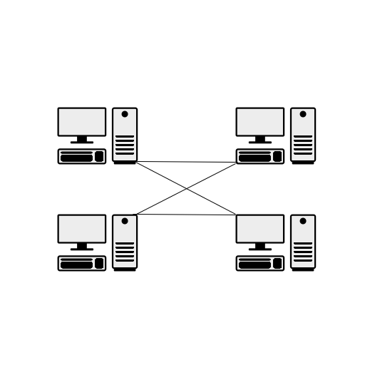
Fig: Peer-to-Peer Network Advantages
- Low cost- No need for a central server.
- Easy to set up- Simple to install and manage.
- Direct sharing- Computers share files directly with each other.
Disadvantages
- Less Secure- Data is not centralized, making it difficult to secure.
- No central control- Data is not centralized, making it difficult to maintain.
- Slower performance- Speed depends on other user’s computers.
-
Client-Server Network
- It is the most popular model for computer networks that utilize client and server devices each designed for specific purposes.
-
In this model, the client is the person or computer that sends requests to access data from server, and server and those devices that handle the request from many clients simultaneously.
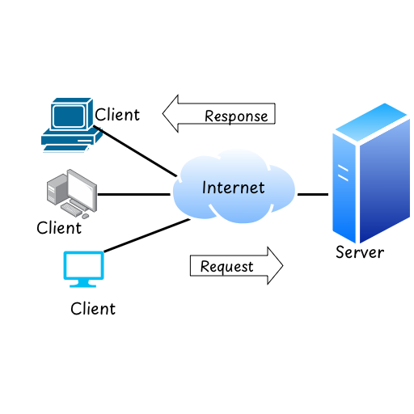
Fig: Client-Server Network Advantages
- High Security- Data is centralized, making it easy to secure.
- Central Control- Data is centralized, making it easy to maintain.
- High Performance- Speed depends on the server's capability.
Disadvantages
- High Cost- Requires a dedicated server.
- Server failure risk- If the server fails, clients can’t access data.
- Need expertise- Requires trained staff for maintenance and security.
-
-
Transmission Medium
- Transmission medium simply refers to the path that can carry information from source to destination.
-
There are two types of medium i.e. Guided and Un-Guided
-
Guided Media
- The guided medium consists of physical connection between the source and destination through a wire or cable.
-
It can be further classified as:-
-
Twisted Pair Cable
- The guided medium in which pairs of wires are twisted together.
- The main reason for twisting the wire is to reduce the outgoing noise and incoming noise.
- These are used in LANs, Ethernet, Telephones, etc.
-
These are further divided into 2 types i.e.STP and UTP
-
STP (Shielded Twisted Pair) Cable
- As the name indicates, this is shielded by metallic braid or fossil shield to reduce electromagnetic interference.
-
UTP (Un-Shielded Twisted Pair) Cable
- The type of twisted pair cable in which the shield is absent.
-
The difference between these two cables is shown below.
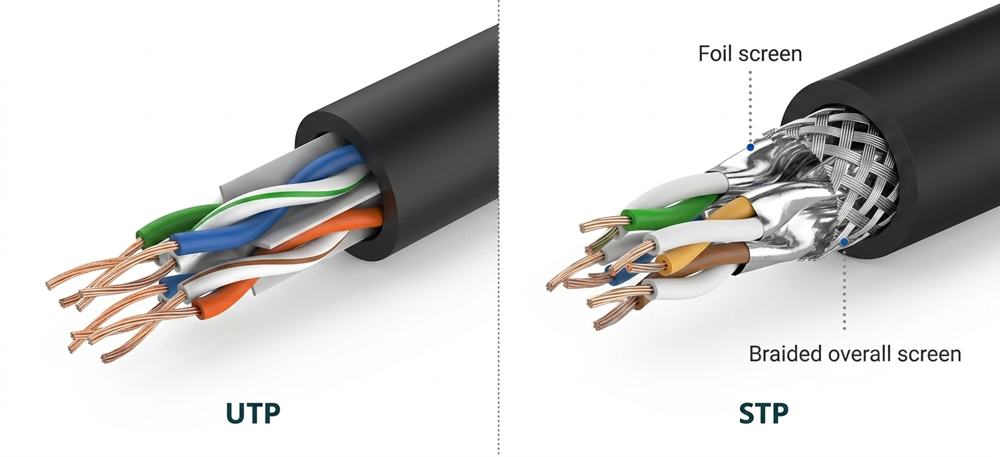
Fig: STP and UTP Cable
-
-
Coaxial Cable
- Co-axial cable are those cables which are capable to carries signal of higher frequency range than twisted pair cable.
- In this cable, there is a central core conductor of solid wire (usually copper wire) enclosed in an insulating sheet.
- The primary use of this cable can be found on TV networks.
-
The structure is as shown below.
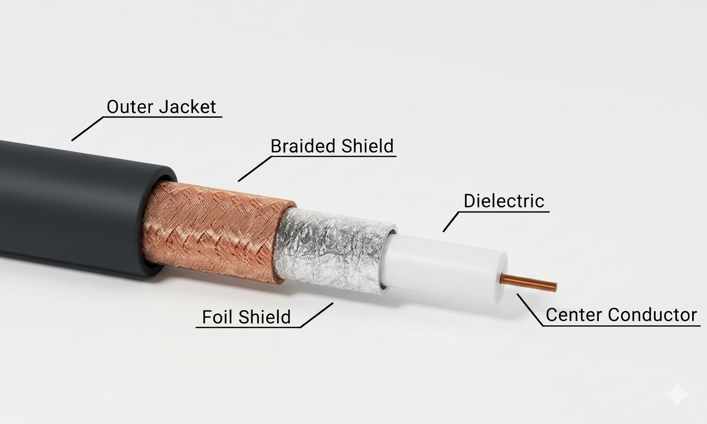
Fig: Coaxial Cable Advantages
- It has good shielding, so interference is very low.
- It supports higher bandwidth than twisted pair cable.
- It allows data transmission over long distances.
Disadvantages
- It is thicker and less flexible than twisted pair cable.
- Installation and maintenance are difficult.
- It is more expensive than twisted pair cable.
-
Fiber Optics
-
Fiber Optics cables are those cables which consist of a plastic/glass core that carries data in the form of light. This cable is based on the principle of total reflection.
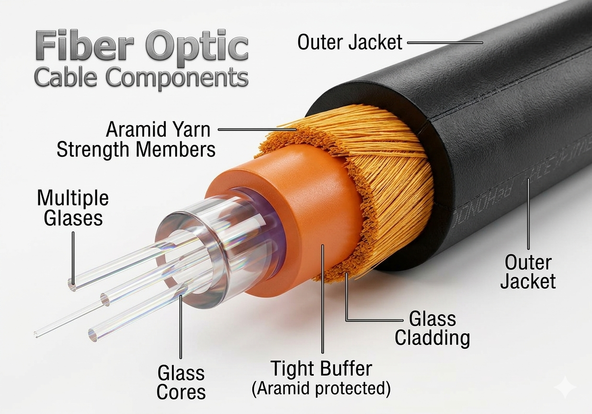
Fig: Fiber Optics Advantages
- High-speed data transmission.
- Low signal loss over long distances.
- Immunity to electromagnetic interference.
Disadvantages
- Higher Installation costs.
- Can be easily damaged if mishandled.
- Limited flexibility installation.
-
-
-
Unguided Media
- It is also called wireless medium, since there is absence of wire to connect the source and destination.
-
In this medium, the data signals are flows in the form of electromagnetic waves.
-
Microwaves
- These are the electromagnetic waves ranging in the frequency between 1-300 GHz.
- Microwaves are unidirectional and narrowly focused. This means that the sending and receiving antenna need to be aligned in the same direction.
-
In microwaves a transmitter sends electrical signals representing the data to be transmitted. A receiver accepts the signals and converts them into digital form.
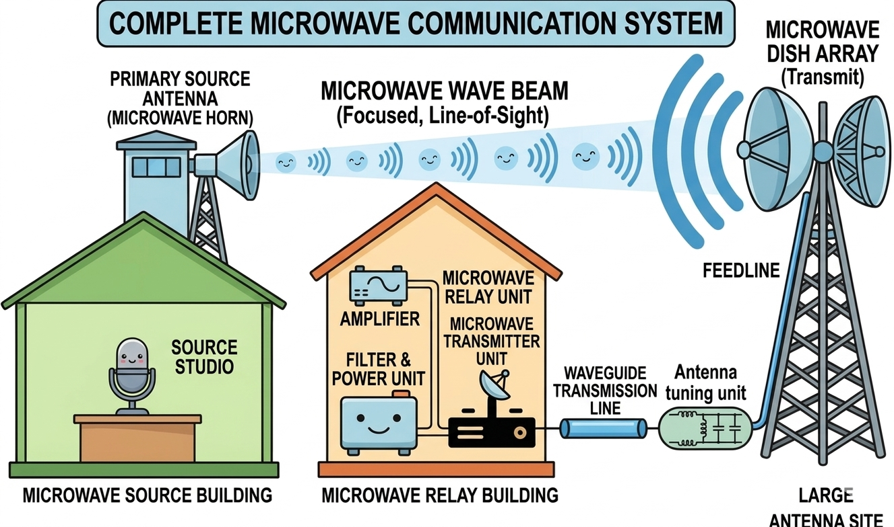
Fig: Microwave -
Examples: Radar System, LANs(Wi-Fi) used microwaves frequency.
Advantages
- Enables fast data transfer
- High bandwidth capabilities
- High efficiency and reliability
Disadvantages
- Noise interference(Little rain, fog and other obstacles can obstruct the line of sight).
- Required un-obstruct path between the transmitter and receiver.
-
Satellite Communication
- Satellite communication involves the use of a satellite station in earth’s orbit to transmit data between devices.
- In satellite communication, the message is sent from the earth station which is called up-link (frequency 6GHz - 14GHz). The satellite receives that up-link and again transmits back to the earth through the transponder; such signal is called down-link (Frequency 4GHz - 12GHz).
-
The most popular examples of satellite communication are television broadcasting, mobile communication, GPS system, etc.
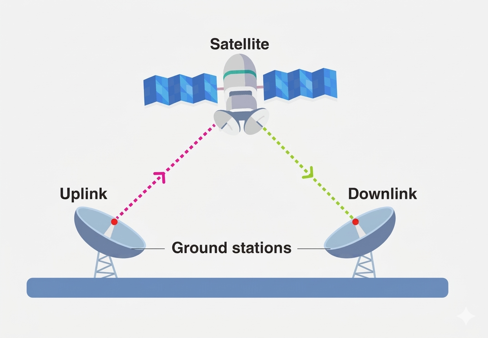
Fig: Satellite Communication -
Advantages
- It provides wide global coverage including remote areas.
- It supports long-distance communication.
- It is suitable for broadcasting services like TV and Radio.
- It enables communication without a physical cable.
Disadvantages
- It covers a very large geographical area
- It supports long-distance communication.
- It is useful for TV, radio, and Internet services.
-
Radio Transmission
- The radio transmission involves the sending the signals using the radio waves through the air
- The radio transmission system uses electromagnetic waves of frequency between 3Hz to 300GHz.
- The antenna consists of a transmitter and radio receiver to receive the signal.
-
Service broadcasting channel remote control devices like drone , bluetooth use radio transmission.
Advantages
- It allows wireless communication without using cable.
- It can cover a large area.
- It is easy and quick to install.
Disadvantages
- It is affected by noise and interference.
- It provides lower data security.
- It has limited bandwidth compared to wired media.
-
-
Impairments
- In a communication system the signal that is received at the receiver side may differ from the signal that is transmitted , this is due to the various impairments.
- Simply impairments refers to the disturbance and noise that are added with voice or data in the channel which degrades the quality of signal and causes signal bit error.
-
The basic signal impairments are:-
-
Attenuation
- It means loss of energy when a signal travels through a medium its strength decreases with distance.
- Beyond a certain database, attenuation becomes unacceptably great and that's why repeater and amplifier are used to boost the single at regular intervals.
-
Jitter
- It is an uneven delay in the delivery of audio and video packets. If there is variation in packet arrival time then jitter occurs. It is measured in millisecond(ms).
- For example: Video packets are arrived at every 30ms on the receiver side and at some time some packets are arrived at 40ms the uneven quality of video is the result.
-
Distortion
- Distortion means change in shape and form of the signal due to the unwanted signal fluctuation.
- Each signal component has its own propagation speed through a medium. Therefore its own delay through a medium is arriving at the final destination.
-
Crosstalk
- It is the phenomenon of hearing another conversion. It occurs due to the electrical coupling between nearby twisted pair cables that carry multiple signals. Whereas the fiber optics cable does not experience crosstalk.
- The real life example of crosstalk is sometimes we can hear another conversation on our phone.
-
Echo
- It is simply bouncing back of signal at the end of the wire so that there is inference with the normal transmission and causing the loss of signal.
- An echo is the sound caused by reflection of sound waves from a surface or transmission medium back to the listener.
-
Noise
- It is the unwanted and undefined mixture of the signal so that the quality of the signal is degraded at the receiver side.
- Noise can be classified as external noise and internal noise.
- Internal noise is noise that is generated internally or within the system.
- Example:Thermal noise, External noise is the noise that is generated due to the external component like industrial noise, atmospheric noise, etc.
-
Basic Terms used in computer network
-
IP Address
- Internet protocol address is a unique numerical value assigned to each device that is connected to a computer network. It serves two main functions identifying the network interface or host and providing the location of the device in the network.
- There are two types of IP address IPv4(32 bits) and IPv6(128 bits).
- IPv4 address is written in decimal notation consisting of four numbers separated by dots. For example 192.168.1.1
- IPv6 address is written in hexadecimal notation consisting of eight groups of four digits separated by colons. For example 2001:0db8:85a3:0000:0000:8a2e:0370:7334
Difference between IPv4 and IPv6
IPv4 IPv6 Uses a 32 bits address Uses a 128 bits address Address is written in decimal format Address is written in hexadecimal format Provides limited address space Provide vast address space Security features are optional Security is built in (IPsec) Supports broadcast communication Does not support broadcast communication (uses multicast) Why is IPv6 needed over IPv4?
- IPv4 address space is limited and it is expected to run out of addresses in the near future.
- IPv6 address space is vast and it is expected to last for a long time.
- IPv6 is more secure than IPv4.
- IPv6 is more efficient than IPv4.
- IPv6 supports automatic address configuration
-
MAC Address
- A MAC(Media Access Control) address is a unique identifier assigned to a network interface card/controller for communication.
- Since NIC is a hardware component that enables a device to connect to a network.
- MAC address is stored in ROM and it is 48 bit in length and contains 12 hexa-decimal numbers each of 4 bits.
-
Typically Mac address is written in one of the following formate:
MM:MM:MM:SS:SS:SS
MM-MM-MM-SS-SS-SS
- Where “MM” stands for the manufacturer's identifier and “SS” represents the serial number assigned by the manufacturer.
- For example: 00-A0-C9-14-C8-29
Difference between MAC Address and IP Address
MAC Address IP Address Physical address assigned by manufacturer Logical address assigned by network administrator Used to identify the location of the device in the network Used to identify a device on a network Fixed and cannot be changed Can be changed (dynamic or static) Works at Data Link Layer (Layer 2) in OSI Model Works at Network Layer (Layer 3) in OSI Model Eg: 00-A0-C9-14-C8-29 Eg: 192.168.1.1 -
Subnet Mask
- It is a logical subdivision of an IP address. The process of dividing a network into two or more networks is called subnetting.
- It is a 32bits number created by setting host bits to all 0’s and setting network bits to 1’s.
- For example: 255.255.255.0, tells us the first three groups denote network portion and the last group denotes host portion.
-
Gateway
- It is a node or bridge in a computer network that can be used to join one device to another. It can act as an entry and exit point for a network, through which all the traffic flows.
- In real life our home router acts as the gateway that manages the traffic between your local devices and the network.
-
Internet
- The internet is a vast global network that connects millions of devices worldwide. It allows devices to communicate and share the information.
- It consists of two major components: network protocol and hardware. Network protocols means the set of rules which enables the system and user to exchange data and services between them.
-
Intranet
- An intranet is a private network that functions similar to the internet but it is limited to the small place, internal use. It is accessible only to members and provides services like sharing information, access to databases, collaborating on projects within the organization.
-
Extranet
- An extranet is an extension of the internet that allows access and sharing of resources to specific external users outside of the organizations such as clients, partners, or suppliers.
- It enables these authorized parties to securely access a certain level of security.
-
Bandwidth
- The rate of data transmission in a given medium per unit time is known as bandwidth. It is measured in terms of bps (bytes per second), Kbps (kilobytes per second), Mbps (megabytes per second), etc.
- Higher the bandwidth, higher will be the data transmission and faster will be the communication. But if bandwidth is low then it leads to network congestion causing network impairments.
-
Network Tool
-
Network tools are those tools that are used for supporting the easier and effective network connection in data communication.
-
Packet Tracker
- It is a powerful network simulation tool developed by Cisco systems. The main purpose of this packet tracker is configuration of the network, visualizing and troubleshooting. It allows us to experiment with network behavior, build models and also to trace the movement of data packets in data communication.
-
Remote Login
- It refers to the ability to access and control a computer or device from a different location over the internet. This can be achieved by using different remote software applications like TeamViewer, Anydesk etc. remote login running
-
-
OSI Reference Model
- An Open System Interconnection (OSI) is the architectural model developed by international standard organization (ISO) to allow the sending and receiving of data between two computers.
- It is divided into seven layers that work together to carry out specialized network functions.
-
The different layers and their respective functions are explained below:
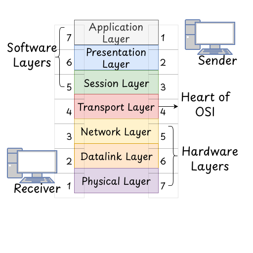
Fig: OSI Reference Model -
Application Layer
- It is the top most layer of OSI reference model which is implemented by the network application.
- It is the end user layer which produces data that has to be transferred over the network.
- Browser, Messenger, HTTP, FTP runs on this layer.
-
Presentation Layer
- It is also called a translation layer. It is concerned with the syntax and semantics of the information, which is exchanged between two systems.
- It ensures that the data is in a usable format or not. In this layer the different tasks like translation, encryption, decryption, data compression, etc. operations are performed.
-
Session Layer
- This layer is responsible for establishment of the connection and maintenance of the session. After completing the data transfer it terminates a session.
-
Transport Layer
- This layer is responsible for transmitting the data used in transmission protocols like TCP and UDP.
- It provides services to application layers and takes services from the network layers.
- It is responsible for the end to end delivery of complete messages and also provides the acknowledgement of successful data transmission.
-
Network Layer
- It works for the transmission of data between two nodes on a network. It selects the shortest path to transmit the packets from the number of routes available. IP address and subnet mark are used in this layer.
-
DataLink Layer
- This is responsive for node to node delivery of the message. It ensures that the data is transmitted error free and in correct sequence. It consists of two sub layers LLC and MAC.
- LLC (Logic Link Control)is responsible for flow control and error correlation while MAC (Media Access Control) is responsible for providing access to the medium.
-
Physical Layer
- It is the bottom layer of the OSI reference model. It is responsible for the actual physical connection between the devices.
- This layer is responsible for transmitting individual bits from node to next.
- Hubs, Repeaters, NICs and Cables are used as Hardware components.
-
Classful IP Addressing
- It was an early method (1931-1993) used to assign IP addresses and divide the IPv4 address space into fixed classes.
-
Each IP address was categorized based on its leading bits, and the class determined its network and host portion.
-
Class A IP Address
- The class A IP addresses are assigned to the networks that contain a large number of hosts.
- Let’s say you’re running a large organization, like a multinational company with offices in various countries. You’d need a massive number of IP addresses to allocate to all the devices (Computer, Printer, Servers, etc.) in your network. This is where Class A IP addresses come into play.
-
As we know IP addresses contain network bits and hosts. Here in class A, Network ID contains 8 bits and Host ID contains 24 bits.
1 bit 7 bits 24 bits 0 Network ID Host ID - In class A the first bits in the first octet is always 0 and it ranges from 0.0.0.0 to 127.255.255.255.
- But 0.0.0.0 is used for reserved purposes like (Network identification/default route). Similarly, 127.0.0.1 is used for local host testing. So usable 1.0.0.0-126.255.255.255.
- The default subnet mark of class A IP address is 255.0.0.0.
-
Class B IP Address
-
These addresses are for medium-sized networks like universities, business, organizations, etc. They range from 128.0.0.0 to 191.255.255.255 and the first two bits are always set to 1 and 0 respectively.
1st bit 2nd bit 14 bits 16 bits 1 0 Network ID Host ID - The default subnet mask for class B is 255.255.0.0.
-
-
Class C IP Address
-
These addresses are for small networks like LANs, small businesses, etc. They range from 192.0.0.0 to 223.255.255.255 and the first three bits are always set to 1, 1 and 0 respectively.
1st bit 2nd bit 3rd bit 21 bits 8 bits 1 1 0 Network ID Host ID - They are designed for smaller networks like home networks, small business, and small organizations.
- Subnet mark is 255.255.255.0.
-
-
Class D IP Address
-
They range from 224.0.0.0 to 239.255.255.255 and the first four bits are always set to 1, 1, 1, and 0 respectively.
1st bit 2nd bit 3rd bit 4th bit 28 bits 1 1 1 0 Host ID - These IP addresses are dedicated to multicasting, which means a technique that allows data to be sent from one sender to multiple receivers.
-
-
Class E IP Address
-
These addresses are reserved for experimental purposes. They range from 240.0.0.0 to 255.255.255.255 and the first four bits are always set to 1, 1, 1, and 1 respectively.
1st bit 2nd bit 3rd bit 4th bit 28 bits 1 1 1 1 Host ID - They are reserved for experimental purposes.
-
-
- No subnet marks for class D and class E (Network and division isn’t needed).